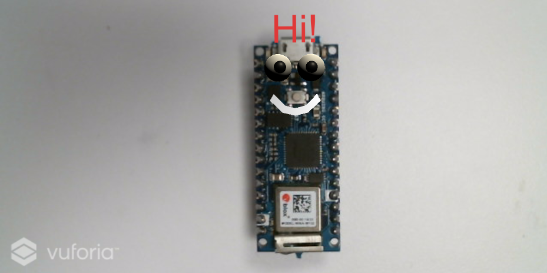
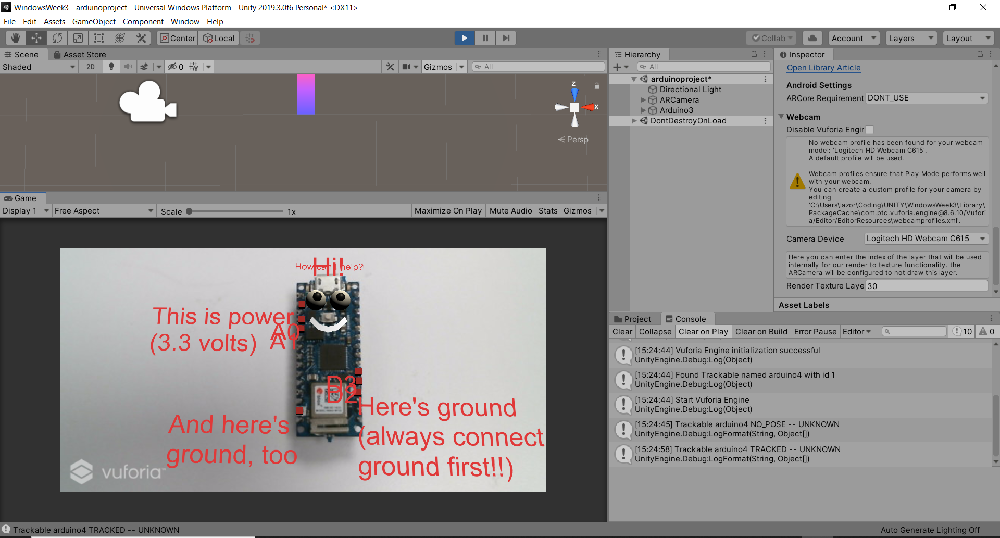
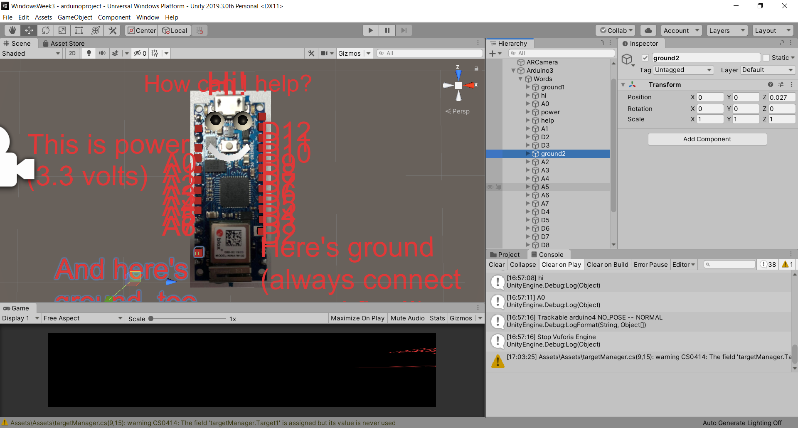

This past week we were brainstorming about using different forms of input and output for AR -- some of the ones like heat, wind, and such are ones I'm already exploring in my intangible interactions class, which is a useful overlap. I decided to continue with my ARduino project by introducing a new mode of interaction with it; touch was very hard to do right on the tiny points of pin on my Arduino, so I thought my app might work a lot better if it was voice controlled.
Part of what we had talked about in class was the potential for users, in interacting with objects, to explore them in a way that gave them personality (ironically this is ALSO something I'm touching in intangible interaction). The easiest way I can think of to make something personable is to give it a face, as my studies in cognitive science (as well as our intuition) will tell us that as humans we can't resist anything with a face. So, I gave my Arduino two big eyes, a smile, and a friendly little text box saying "Hi!"
After the face, we needed the data. I put in a few pins first just to make sure things were going to work: ground, power, A0, A1, D2, D3.
Luckily, Windows has a surprisingly good speech recognition module already built into Windows 10, and by switching Unity's build engine in the player settings to "Universal Windows Platform" I was able to quickly and easily integrate it into my project. The voice recognition is robust, and I was getting adequate responses to phrases which weren't even real words, like A0, A1, and PWM, which was very promising!
When I got the voice recognition working consistently I knew it was time to put in the rest of the pin texts -- my Arduino in Unity ended up looking like some sort of centipede.
To begin with, I initialized the SetActive state of all the elements containing text to off, keeping on only the eyes and the initial "hi". I wanted to structure my voice commands so that the user could easily and intuitively switch between some of the pins to see where they were, though first I couldn't help programming in a nice little personal touch -- first you have to say hi back to the Arduino to get it to help you.
To get the text display to switch every time a new pin number was said out loud, I put in a switch case. When it recognizes a phrase, it goes through all the pins and sets them off, then finds the pin with the same name as the word and turns it on. (The trick to turning a text mesh off and on is to attach it to a parent, and then you can turn it off and on through the parent instead of turning it off directly).
After coding my huge switch statement I was sure I'd get an error, but to my surprise it worked right the first time -- and it actually worked really well! See it in action below.
Comments? Questions? Concerns? Email me here!